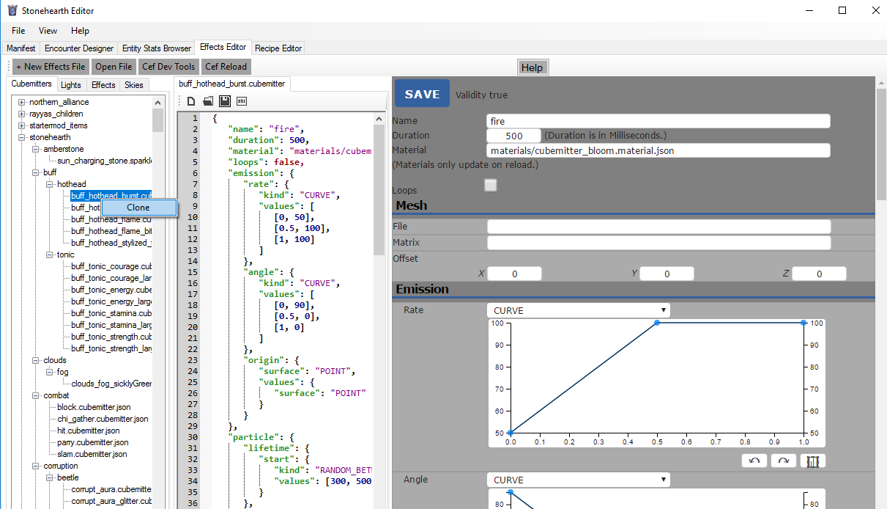
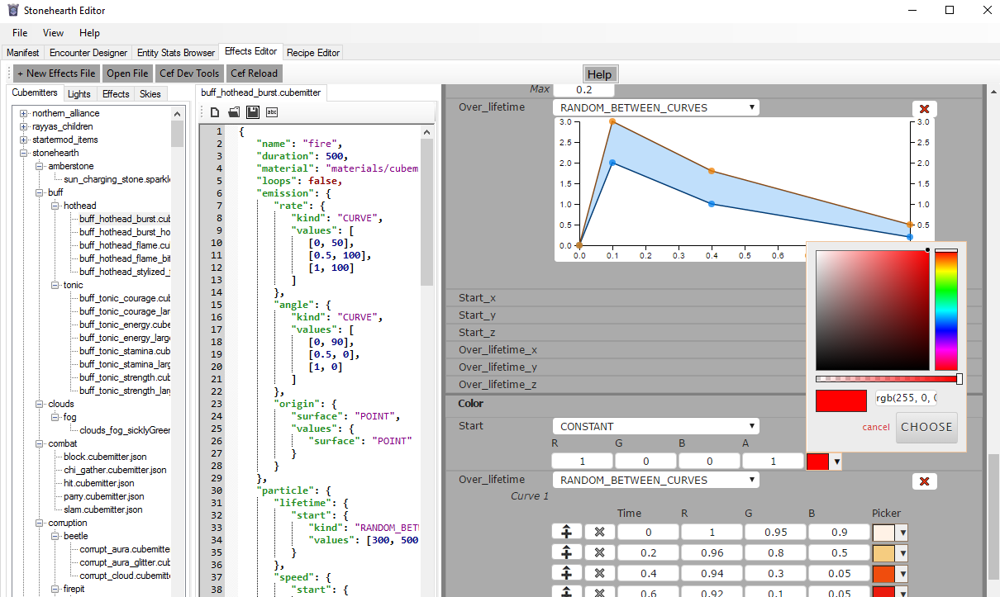

Cubemitters are the particle effects. For convention, stonehearth's particle effect files (which are just JSON!) have names that end with ".cubemitter.json". This way we can tell them apart from effect files that might have the same name. All the existing cubemitters are located inside the stonehearth\data\horde\particles directory.
You can have several cubemitter tracks for the same effect, if you need to (for example, to have both big and small particles playing at the same time, like the effects for the lamps).
- The effect file
- Creating cubemitter files
- Testing particle effects
- How to create particle effects in SHED
The effect file
Example of a cubemitter track from an effect JSON file:
"cubemitter": {
"type" : "cubemitter",
"start_time" : 0,
"end_time" : 30,
"cubemitter": "particles/sparks/hit_spark.json",
"transforms": {
"x" : 0,
"y" : 1.25,
"z" : 0,
"rx" : 0,
"ry" : 0,
"rz" : 0
}
}
These are the fields that we can find in a cubemitter track:
"type" : "cubemitter" -- the type of the track. A particle effect ("cube emitter").
"cubemitter" -- the path to the JSON file that defines the settings for the particles. By default, they will be read from
stonehearth/data/horde. I.e,"particles/dust_poof/purple_dust_poof.cubemitter.json"will be actually read asstonehearth/data/horde/particles/dust_poof/purple_dust_poof.cubemitter.json. In order for the game to read our custom effects from our mod folder, we need to use an absolute path starting from our mod's namespace (for example
In order for the game to read our custom effects from our mod folder, we need to use an absolute path starting from our mod's namespace (for example /candyland/data/horde/particles/sprinkles_rain/sprinkles_rain.cubemitter.json). Otherwise the game will try to read the path starting at thestonehearth/data/hordedirectory. This also applies for paths to render materials."transforms" : {} -- contains "x", "y", "z", "rx", "ry" and "rz" fields. These are offsets (in world units) and rotations (in degrees) for the emitter of the particles. That way, the particles can spawn at different locations/rotations from the corresponding entity. If the entity moves (such as a hearthling) the emitter will move with them, it's attached.
"start_time" -- optional field (defaults to 0). The time in milliseconds at which this track should start (in regards to the whole effect).
"end_time" -- optional field (defaults to 0). The time in milliseconds at which this track should stop. It determines the total duration of the track (if you haven't set "end_time", the cubemitter track will loop).
"bone" -- optional field. It's the name of the entity's bone to which we want to attach the emitter. If we omit this field, the emitter starting position will be the root of the entity (normally at the center of the entity and at the ground level). Then it will be moved and rotated depending on what we defined for the parameters in the "transforms" field.
Creating cubemitter files
Now for the contents of our cubemitter JSON file. Remember that you can copy an existing one from stonehearth\data\horde\particles to get started (try changing the values one at a time and see how they affect the particles).
Each cubemitter file has these fields:
"name" -- an identifier for the cubemitter effect.
"duration" -- duration of the cubemitter (in real time milliseconds).
"material" -- path of a material map for the cubemitter (defaults to
"materials/cubemitter.material.json")."loops" -- a boolean to define whether the cubemitter loops or not.
"mesh" : {} -- optional field. Contains "file" (referencing a QB file), "matrix" (the name of a matrix inside the QB model, can be empty if there's only one) and "offset" : {} (containing "x" / "y" / "z" points to offset the pivot for the QB model - leave at (0,0,0) if your QB is already centered). This will make it so that the cubemitter particles have the shape of the QB model.
The QB model will only have one color when rendered, since particles can only have one color at a time. You can see examples of this on some of the hearthlings emotes, hearth effects, and weather effects.
"max_distance" -- optional field. Particles will only spawn if we're closer to the emitter than this distance (in number of blocks). Once spawned, they'll be rendered until their lifetime expires, even if we move the camera away (but new particles won't spawn if we're farther than this).
"max_particles" -- optional field. Used to limit the maximum number of particles that can be alive at the same time for this cubemitter.
"unculled" -- optional field (a boolean). When true, will prevent the spawn rate from changing with camera distance.
If the camera distance is higher than 200 blocks from the emitter the rate is halved by default, and if we set "max_distance" it will stop depending on it, so with this field we can make it so that the rate will be the same no matter the distance.
Useful when our effect must be visible from far away (in the vanilla game, it is used in certain weather effects and for the titan slayer). Bear in mind that it can impact performance (since it will render even when the effect is not in view).
"realtime" -- optional field (a boolean). When true, particles will not be animated with game time, but with real time. Which means they'll keep spawning and moving even when the game is paused, and their speed will be constant even if the player is playing at a higher speed. Currently only used for the ping effect in multiplayer (try pressing and holding Alt and click on the terrain in a multiplayer game to see it).
"emitter_space_tiling" -- optional field. It makes the cubemitter to 'wrap' in 3D space. It's important that the volume of the particles being created is lined up with the space tiling (so an emitter with a diameter of 80 units needs a wrapping of 80 units - otherwise there is a gap where things aren't emitted). This is used for weather effects that are attached to the camera.
For all the following fields of the cubemitter file, assume that the possible values for the "kind" property are "CONSTANT" / "CURVE" / "RANDOM_BETWEEN" / "RANDOM_BETWEEN_CURVES" unless specified otherwise. You can check how to define the "values" field for each of them in this table, although for some fields they might be a little different (such as for colors):
"emission" : {} -- properties related to the emission of the particles:
"rate" : {} -- the spawning rate of the particles. Contains a "kind" field (which in addition to the types above can also be "BURST") and a "values" field.
"angle" : {} -- the angle at which the particles are emitted. Contains a "kind" field and a "values" field. Angles must be represented in degrees.
"origin" : {} -- the shape of the surface of the emitter, particles will spawn randomly along it. Contains a "surface" field (which must be one of "POINT" / "RECTANGLE" / "CUBOID" / "SPHERE" / "CYLINDER" / "CONE") and a "values" field (refer to this table for sample values depending on the "surface" type). Instead of "surface", you can write "shape", if that feels more intuitive to you.
In general the dimensions for the origin surface are represented in blocks / world units.
"translation_x" / "translation_y" / "translation_z" -- optional fields. Particles will spawn translated to a different location from the emitter's origin depending on these fields. Each one contains "kind" and "values" fields. The actual values (not the ones for time if we use curves) can be negative if we want to translate the particles in the opposite direction (remember than Y is up/down in Stonehearth).
"rotation_x" / "rotation_y" / "rotation_z" -- optional fields. Same than for translation, but for rotation in the different axes. The actual values are in degrees.
"scale_x" / "scale_y" / "scale_z" -- optional fields. Same than the previous ones, but for scale of the particles when they spawn. A scale of 1 for a particle is as big as one block / world unit.
"particle" : {} -- properties related to each of the particles, you can omit any of them if you're not going to use it. Note that, for the fields called "start", the only possible values for "kind" are "CONSTANT" and "RANDOM_BETWEEN". For the rest we can use any of the four values mentioned above.
"lifetime" : {} -- how long in milliseconds should each particle live. It has a "start": {} field, inside which we have "kind" and "values".
"speed" : {} -- optional field. The speed of each particle (how many blocks per second the particle travels, regardless of direction). By default the particles will move towards the outside of the emitter even if we don't set any speed. It has a "start" : {} field and / or an "over_lifetime" : {} field. Inside of each we have "kind" and "values", with the possible values as explained above.
The "start" represents the speed when the particle spawns, and "over_lifetime" is used to change the speed at different moments of its life time.
"velocity" -- optional field. It's similar to speed, but in a specific direction (e.g. if your starting speed is 0, with a velocity of 1 the particles will move 1 block per second in that direction). It has any of "over_lifetime_x" / "over_lifetime_y" / "over_lifetime_z", each containing "kind" and "values" fields as explained above. Negative values will make them move towards the opposite direction.
"acceleration" -- optional field. How much does velocity change over time for each particle. It has any of "over_lifetime_x" / "over_lifetime_y" / "over_lifetime_z", each containing "kind" and "values" fields as explained above. Negative values will make them move towards the opposite direction.
"rotation" -- optional field. It has any of "over_lifetime_x" / "over_lifetime_y" / "over_lifetime_z", each containing "kind" and "values" fields as explained above. The values for rotation are in degrees.
"scale" -- optional field. The scale of each particle. It has "start" (but can also have "start_x" / "start_y" / "start_z") and / or "over_lifetime" (but can also have "over_lifetime_x" / "over_lifetime_y" / "over_lifetime_z") fields. Inside of each we have "kind" and "values", with the possible values as mentioned above.
"color" -- the color for the particles. It has "start", "over_lifetime" and / or "over_lifetime_a" fields, each having "kind" and "values" as explained above.
There's a particularity for colors. The arrays will have 3 values, representing RGB colors. They must be written in decimal format (so from 0 to 1, check this conversor for help to convert them, or use SHED).
The values for "start" include a fourth value for the alpha or transparency of the particle. But for "over_lifetime" they don't (first value in curves is time like for the rest of properties). The "over_lifetime_a" is for setting the alpha over time.
Testing particle effects
There's a quick way to iterate over particle effects without having to restart the game every time.
Add "enable_renderer_file_watcher" : true, to your user_settings.json file, at the same level than the "user_id".
This will allow you to view the changes in game every time you save the JSON file of the cubemitter (it might take a while to update depending on the life time of the particles).
So we can start a new game, start our effect using debug tools, edit the JSON file, save it and it will update the effect inside the game, no need to reopen it.
How to create particle effects in SHED
At the time this guide was written, SHED won't be able to detect the effects if they're not inside the directories mentioned above.
So make sure you're using the same directory structure than in the stonehearth mod (your_mod_namespace/data/horde/particles).
Go to the Effects Editor, and select the 'Cubemitters' tab. You can right-click on an existing cubemitter, click on 'Clone', select your mod as the target mod and provide a replacement text. Once the tree refreshes you should see your cubemitter listed there, if not, you might need to reload SHED.
When you select your cubemitter file, you should see the JSON in the middle and a web editor at the right:

It's easier to edit in the web editor, since it has curve editors and color pickers, then save it with the blue 'SAVE' button at the top so that the JSON file gets modified, and then save the JSON file too to confirm the changes. Or if you prefer, you can edit the JSON file directly.
Here are some workarounds if the web editor isn't working correctly.
You'll see that many of the fields have a + button at the right to add them or expand them, and an x button to remove them.
When you choose "CURVE" or "RANDOM_BETWEEN_CURVES" in a dropdown, you'll first need to add a curve, then you'll be able to edit it in the curve editor. The way it works is:
- Double click in the chart to add a point.
- You can drag points around by clicking on them to select them first, then holding and dragging the middle mouse button (wheel).
- To remove a point, right-click on it.
- There are undo/redo buttons at the bottom right of the chart. There's also a button to reframe, which is used so that if you dragged points outside of the view, the chart moves the scale so that you can see all points at the same time.
- The horizontal line represents time, so it will go from 0 to 1. If you want to set specific values to the points, you can do so in the textboxes below the chart ("T:" is for time, and "V:" is for value).
- When the chart represents more than once curve, the area between the curves will be colored blue.

For the colors, there will be color pickers. Click on them and you'll be able to easily choose a different color, as well as transparency (but remember the rules mentioned above about how to set the fields for transparency).